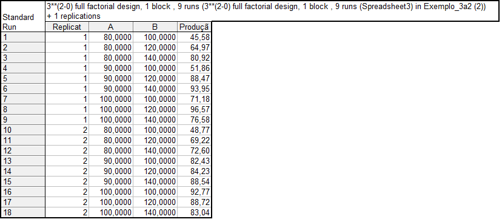
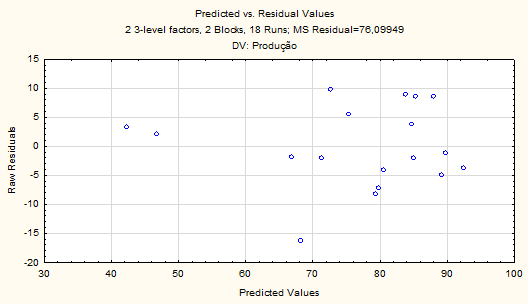
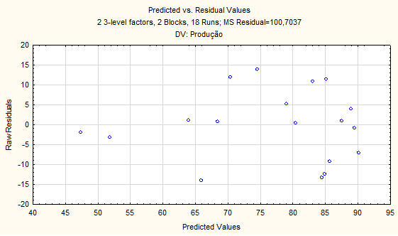

_full_factorial_design,_1_block_,_9_runs_(3__(2-0)_full_factorial_design,_1_block_,_9_runs_(Spreadsheet3)_in_Exemplo_3a2_(2))_in_lista-5)0002.png)
Giovani Carrara Rodrigues 7151669
Resumo:
Neste trabaho vamos análisar os dados abaixo tentando explicar a variável produção através das variáveis A e B. Dois modelos serão Usados. O modelo com interação, termos lineares e quadráticos e outro sem os termos quadráticos.

Modelo com interação, termos lineares e quadráticos

Os resíduos parecem seguir uma distribuição normal.

Aqui vemos que os resídos parecem nao ter correlação.

Acima temos o gráfico da superfície de resposta.
Modelo sem os termos quadráticos
_full_factorial_design,_1_block_,_9_runs_(3__(2-0)_full_factorial_design,_1_block_,_9_runs_(Spreadsheet3)_in_Exemplo_3a2_(2))_in_lista-5)0006.png)

Os resíduos parecem ter uma distribuição normal.

Pelo gráfico acima vemos que os resíduos parecem ser não correlacionados.

Superfície de Resposta fica como no gráfico acima.
Conclusão O resultado da análise dos dois modelos são muito parecidos. Mas vemos que a Soma do quadrado dos resíduos no primeiro modelo é menor com relação ao segundo, portanto ficamos com o modelo com termos quadráticos.